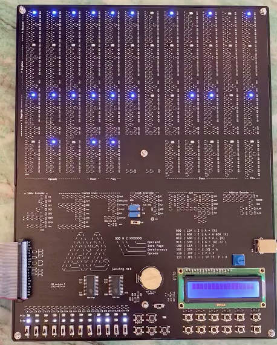
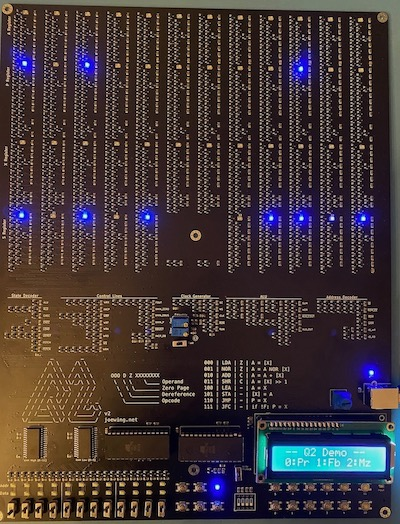

{{ page.title }}
- Revision 4 (?)
- I2C interface
- 6 input buttons instead of 12
- Fixed XHIN_P pull-up
- Separate board for the front panel interface that plugs into
the programming connector (the front panel isn't strictly necessary
or that useful).
- Revision 3 (2021-03-14)
-
Image

- 1094 transistors.
- Uses battery backup for SRAM.
- No more EEPROM, all addresses are in SRAM except 0xFFF,
which is I/O.
- Programming port for a Raspberry-Pi.
- Skip ALU state for non-ALU instructions rather than masking
(saves 24 clocks).
- Resize some pull-up resistors to improve the max clock frequency
(up to 80kHz).
- One known issue:
-
Wrong size pull-up resistor (10k instead of 1k)
on XHIN_P control line limits max frequency. Easy to
fix with a new resistor.
- Revision 2 (2021-02-05)
-
Image

- Single board design with 1128 transistors.
- Issues:
- Switches wired upside-down.
- Silk-screen is missing on the control buttons and have an extra
X for the operand.
- Active-low X11-input tied to GND instead of Vcc
causes most-significant bit to be set after shift right
(easy to fix with a wire).
- Flag register is updated on LEA instruction (easy
to avoid in software).
- Max clock frequency limited to 30kHz.
- Uses two EEPROMs at 0x800 for persistent program storage.
- 16x2 LCD user interface.
Revision 1 (2020-10-04)
- Multiple boards.
- Minor problems with missing connections
and a missing inverter.
- Persistent storage via battery-backed SRAM.
- No user interface.